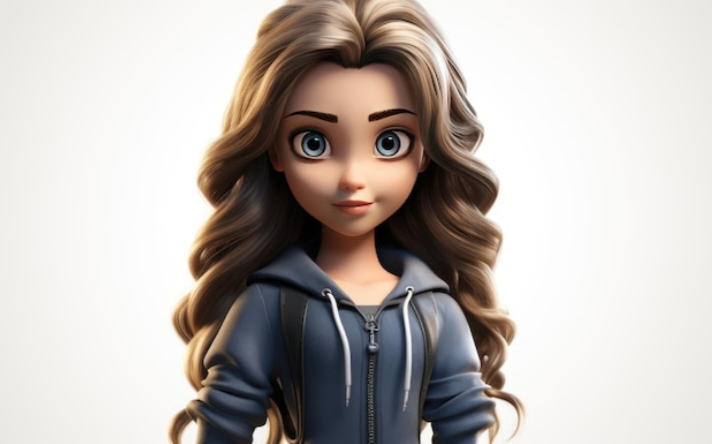

Welcome My Page!
Every person has their own unique story. Here is a glimpse into mine .
My name is M. Arul Mahalakshmi. Iam currently pursuing my MCA degree with
a concentration
in higher education at Madurai Kamaraj University in Madurai.
I completed my bachelor degree from Svn college in 2024.
In my bachelor degree I developed my skills to create a website .
On that I created my project .
The topic is alumni web portal.
Always eager to learn and adapt new tool ,
stay updated with industry
trends to create impactful digital experiences.
I excited about pursuing a
career where I can grow a contribute to innovative projects.